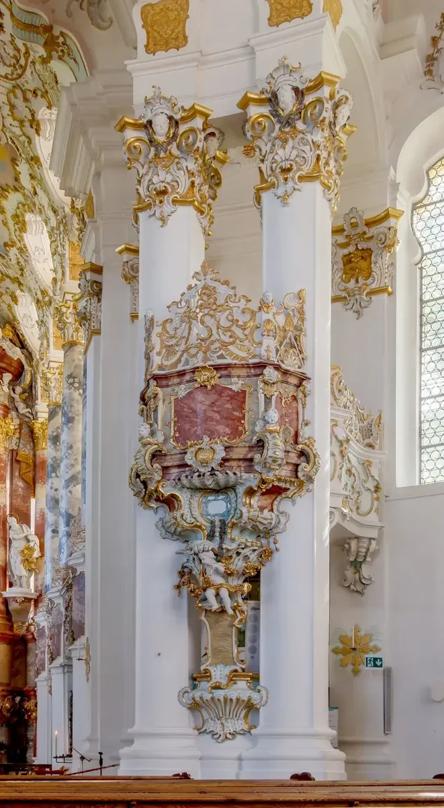
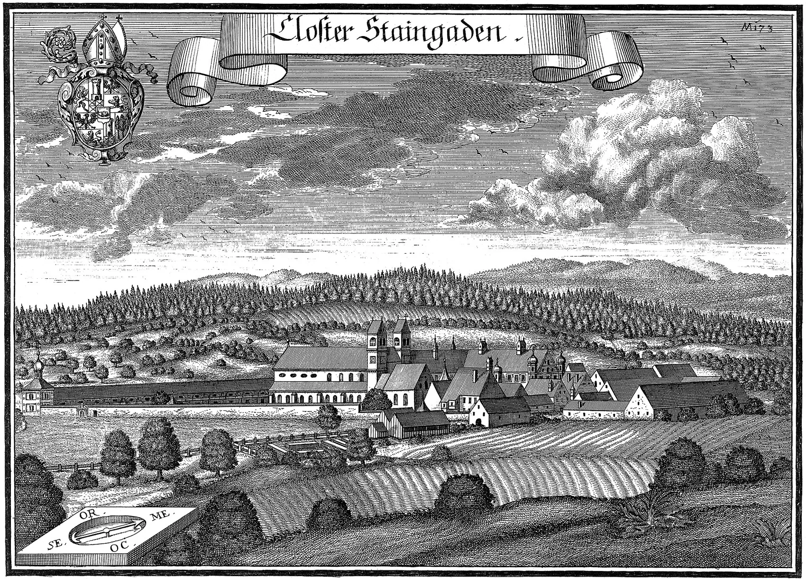
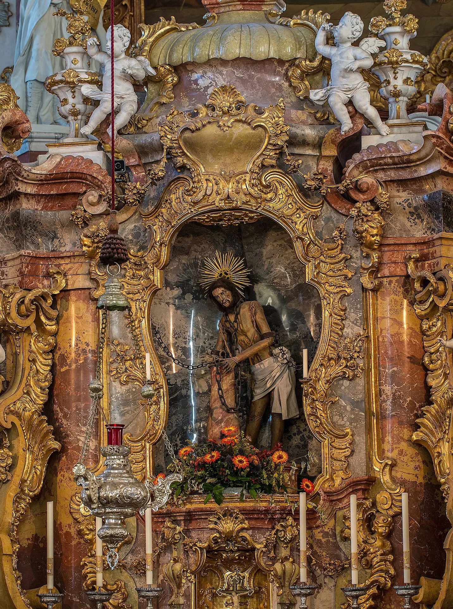
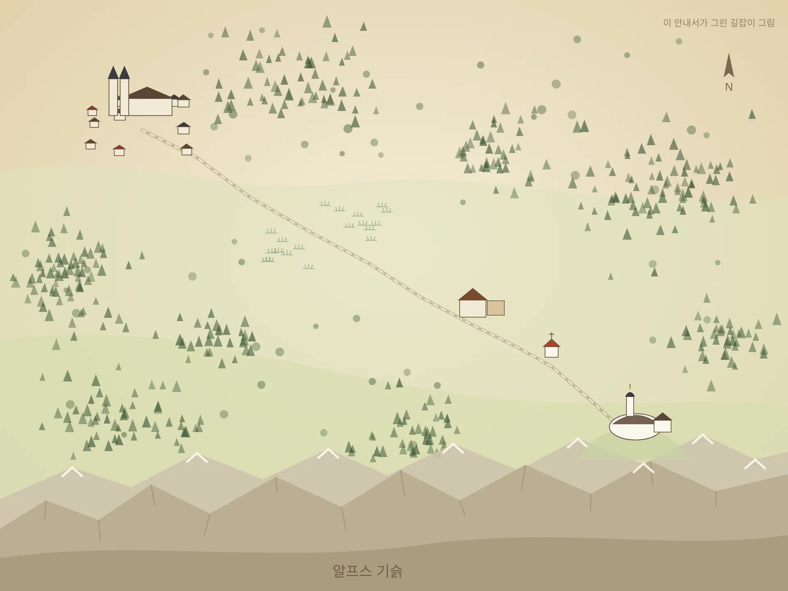
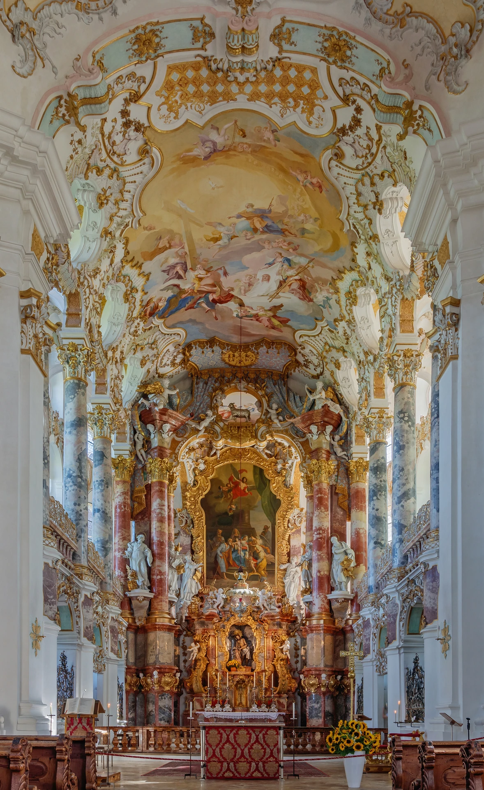
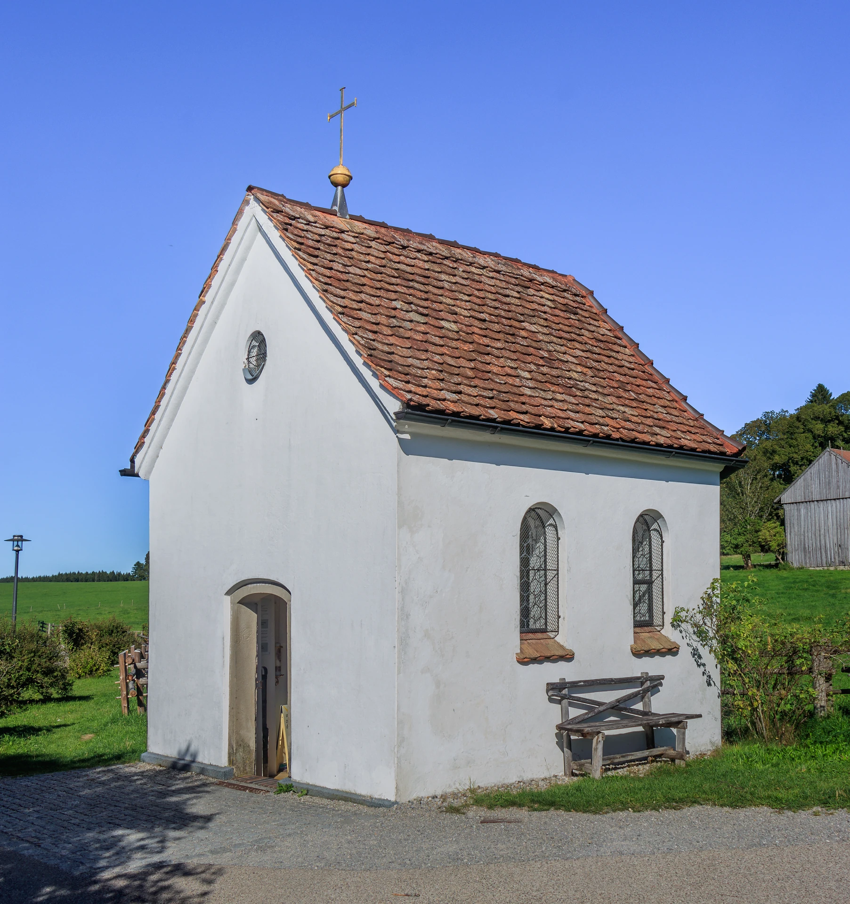
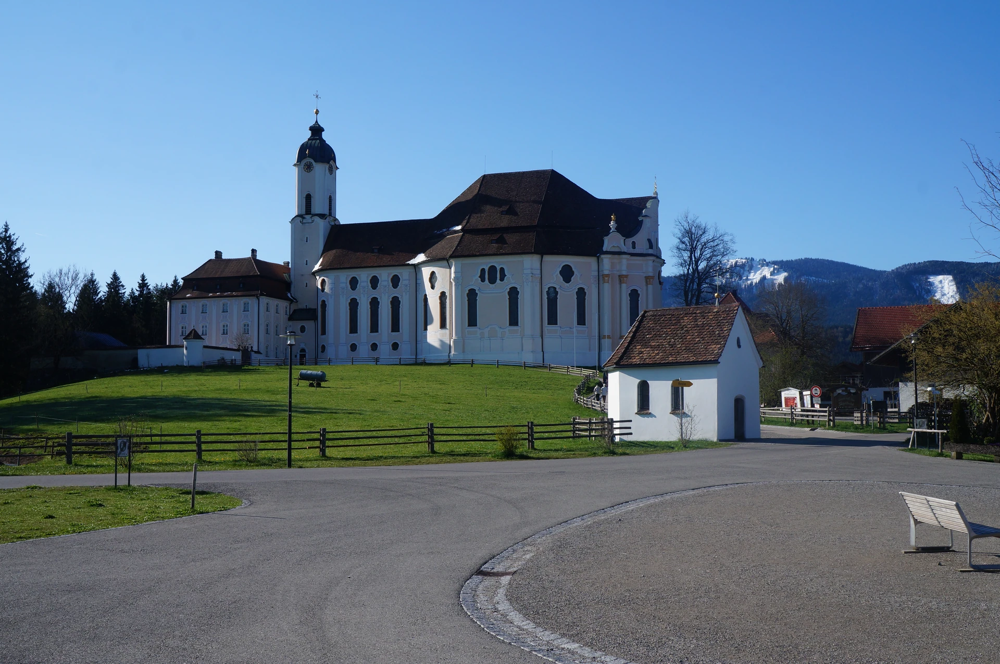
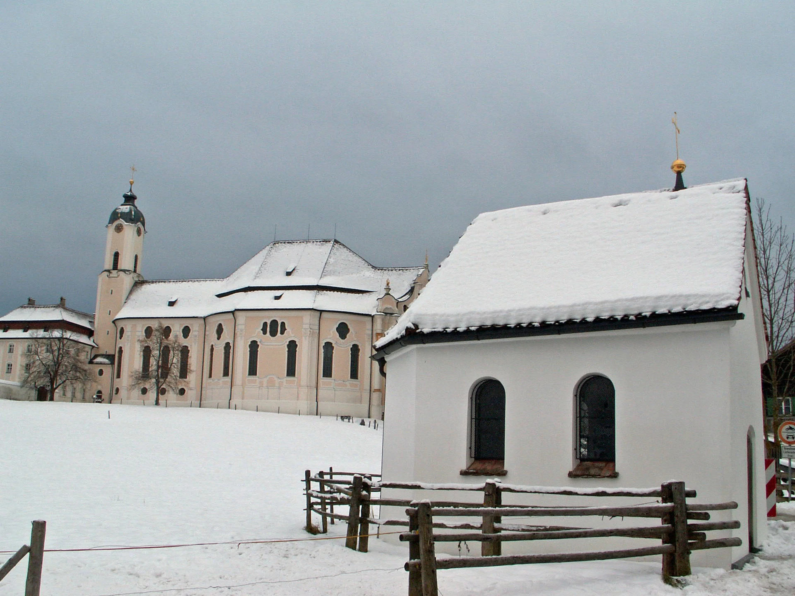

아직 펼치지 않은 카드돌로 지은 숲과 금빛 천장 · 3비스 순례 성당알프스 기슭 시골 초원 한가운데에 평범해 보이는 성당이 서 있어요. 그런데 문을 열고 들어가면 무엇이 펼쳐질까요?금빛 장식이 반짝반짝한 성당 안이야! 밖에서 보면 평범하대.
1738년 5월 4일 ~ 1749년 8월 31일독일 바이에른 · 슈타인가덴과 비스
비스 순례 성당
1738년, 수도원 다락에 치워져 있던 나무상 하나가 한 농가의 침실로 옮겨졌어요. 그 나무상은 11년 뒤 새 성당의 금빛 제단 한가운데에 섰어요. 지도 위에서 나무상이 지나온 길을 따라가 보세요.
수도원 다락에 있던 나무 조각상이 아주 멋진 성당까지 갔대. 지도에서 그 길을 따라가 볼까?
검수 전 시안이에요(기준서 1판). 나무상이 옮겨 다닌 길은 비스 성당 공식 누리집의 기록을 따랐고, 얼굴에 맺힌 방울 이야기는 1746년 기적 책이 전하는 이야기라고 밝혔어요. 지도는 이 안내서가 그렸어요. 상상은 ‘눈 감고 상상해 보기’에만 썼어요.
시안 확인용카드 단계 미리 보기
1
수도원 다락의 나무상
이 이야기의 주인공은 사람이 아니라 나무상 하나예요. 기둥에 묶여 채찍질당하는 그리스도를 나타낸 상이에요. 복음서는 예수가 십자가에 달리기 전에 채찍질을 당했다고 전해요(요한복음 19장 1절).
나무상은 바이에른의 슈타인가덴(Steingaden) 수도원 것이었어요. 수도원은 1732년부터 1734년까지 이 상을 성금요일 행렬에 들고 나갔어요. 성금요일은 예수가 십자가에 달린 날을 기억하는 날이고, 행렬은 사람들이 줄지어 걸으며 드리는 예식이에요.

그 뒤 나무상은 수도원 다락에 치워졌어요. 비스 성당 공식 누리집은 그 까닭을 ‘볼품없어 보여서’라고 적었어요.
그림은 1701년 미하엘 베닝(Michael Wening)이 새긴 동판화 속 슈타인가덴 수도원이에요. 두 탑이 선 성당 둘레로 수도원 건물이 길게 이어져 있어요.
수도원 사람들이 나무 조각상을 들고 행렬을 했대. 그런데 볼품없다고 다락에 넣어 버렸대.
물어보기그림에서 탑이 두 개인 건물을 찾아볼까?
2
농가 침실, 토요일 저녁
수도원 밖 들판, 비스(Wies)라는 곳에 농가가 있었어요. 그 집 아내 마리아 로리(Maria Lory)가 나무상을 집에 모시고 싶다고 청했고, 수도원은 허락했어요.
1738년 5월 4일, 로리 가족은 나무상을 농가로 가져와 침실에 기도하는 상으로 세웠어요.

“남편을 시켜 흘러내린 방울을 닦게 했다”
1746년 기적 책 「비스에 새로 돋은 은총의 꽃」 · 비스 성당 공식 누리집에 실린 대목 · 이 안내서가 옮김
그 기적 책은 이렇게 전해요. 6월 14일 토요일 저녁과 이튿날 일요일 이른 아침, 나무상 얼굴에 방울 몇 개가 맺혔다고요. 공식 누리집은 이날 로리 가족이 나무상 얼굴에서 눈물을 보았다고 적어요.
마리아는 먼저 고해 신부에게, 다음에 수도원장에게 알렸어요. 수도원장은 이 일을 말하지 말라고 했고, 나무상은 1년 반쯤 그 방에 머물렀어요. 1745년 가을 아우크스부르크 주교가 보낸 조사단도 끝내 까닭을 밝히지 못했어요.
사진은 오늘 비스 성당 큰 제단 한가운데에 모신 그 나무상이에요.
농가 아주머니가 조각상을 침실에 모셨는데, 조각상 얼굴에 물방울이 맺혔대.
물어보기아주머니는 이 일을 누구에게 먼저 말했을까?
3
들판에서 제단까지
말하지 말라고 했지만 사람들은 찾아왔어요. 1740년까지 순례자가 1,500명에서 2,000명쯤 왔다고 어림해요. 순례자는 믿음 때문에 거룩한 곳을 찾아가는 사람이에요.
수도원은 농가 가까운 들판에 작은 경당을 지었어요. 경당은 작은 기도 집이에요. 경당이 곧 좁아지자 건축가 도미니쿠스 치머만(Dominikus Zimmermann)에게 새 성당을 맡겼고, 1746년 7월 10일 주춧돌을 놓았어요.
‘다음 곳으로’를 눌러 나무상이 지나온 길을 따라가 보세요.

수도원 다락농가 침실들판 경당새 성당 제단슈타인가덴 수도원에서 비스까지 · 이 안내서가 그린 길잡이 지도 · 비스 성당 공식 누리집의 기록을 바탕으로
다락에 치워졌던 나무상이 새 성당 제단 한가운데에 섰어요. 성당 전체는 1754년 9월 1일에 봉헌되었어요.
1749년 8월 31일 일요일, 새 성당의 성가대석이 봉헌되었어요. 그날 나무상은 들판 경당에서 엄숙하게 새 제단으로 옮겨졌어요. 다락에서 나온 지 11년 만이에요.
조각상이 다락에서 농가로, 작은 경당으로, 큰 성당으로 이사했대!
물어보기조각상은 이사를 몇 번 했을까?
4
금빛 성가대석
성당 전체는 1754년 9월 1일에 봉헌되었어요. 나무상은 지금도 큰 제단 한가운데에 있어요.
순례자들은 기도가 이루어졌다고 믿으면 고마움을 담아 작은 그림판을 바쳤어요. 이것을 봉헌판이라고 해요. 1746년까지 798개, 1747년에 405개가 더 바쳐졌어요.

“이곳에 행복이 머물고, 여기서 마음이 쉰다”
이 성당을 지은 마리안 2세 마이어 수도원장의 말 · 비스 성당 공식 누리집 · 라틴어를 이 안내서가 옮김
건축가 치머만도 1757년에 봉헌판을 그려 바쳤어요. 그림판에는 나무상 앞에 무릎 꿇은 자기 모습을 그리고 ‘D.Z. 서원하여 바침, 1757년’이라고 적었어요.
사진은 성가대석 쪽을 바라본 모습이에요. 큰 그림 아래, 제단 한가운데 작은 금빛 틀 속에 나무상이 있어요.
이 성당을 지은 아저씨도 조각상 앞에 무릎 꿇은 그림을 바쳤대.
물어보기사진 속 제단에서 조각상을 찾아볼까?
5
헐릴 뻔한 성당, 남은 경당
나라가 수도원의 땅과 건물을 거두어 간 뒤(이를 세속화라고 해요), 1809~1810년에는 비스 성당을 경매에 부쳐 헐어 버릴 계획이 섰어요.
이웃 마을 프론라이텐(Fronreiten) 사람들과 농부들이 수십 년 동안 애써 성당을 지켜 냈어요.


나무상이 머물던 들판의 작은 경당도 남아 있어요. 공식 누리집은 경당이 지금도 주차장 옆에 서 있다고 안내해요.
1779년에 나온 한 순례 책은 러시아 페테르부르크와 스웨덴 예테보리에서 온 순례자까지 적었어요. 지금도 해마다 가까운 바일하임·숀가우 둘레에서 젊은이 1,000명쯤이 순례를 와요.
성당이 없어질 뻔했는데, 동네 농부들이 지켜 냈대. 처음 그 작은 경당도 아직 있어!
물어보기오른쪽 사진에서 작은 경당을 찾아볼까?
눈 감고 상상해 보기
1749년 8월의 마지막 날이에요. 늦여름 풀밭에 아침 이슬이 반짝이고, 멀리 산자락이 보여요. 작은 경당 문이 열리고, 사람들이 나무상을 모시고 언덕 위 새 성당으로 천천히 올라가요. 하얀 문 안으로 들어서자 금빛과 하늘빛이 한꺼번에 쏟아져요.
눈을 감아 봐. 늦여름 풀밭이야. 사람들이 조각상을 모시고 언덕을 올라가. 성당 문을 열면… 반짝반짝 금빛!
나의 자리
겉으로는 평범해 보여도 안을 들여다보면 빛나는 사람이 내 곁에 있나요?
겉은 평범한데 안이 반짝이는 보물 상자를 만든다면 무엇을 넣을래?
마음에 닿는 한 줄을 고르거나 직접 써 보세요. 한 줄을 남기면 이 자리의 도장이 찍혀요. 이 기기에만 저장돼요.
더 깊이
궁금한 칸만 펼쳐 읽어도 괜찮아요.
알고 보면
기적 책 1746년에 나온 「비스에 새로 돋은 은총의 꽃」이 농가에서 일어난 일을 전해요. 공식 누리집은 1746년 9월 1일까지 이곳에서 미사가 6,090번 드려졌고, 영성체(미사에서 축성된 빵을 받아 모시는 일)를 한 사람이 40,000명이었다고 적었어요.
두 수도원장 1743년 히아친트 가스너(Hyazinth Gaßner) 수도원장이 치머만에게 설계를 맡겼어요. 그는 공사를 시작한 해인 1745년 3월 28일에 세상을 떠났고, 뒤를 이은 마리안 2세 마이어(Marian II. Mayr)가 계획을 이어받아 성당을 완성했어요. 처음에는 순례자가 줄면 성가대석만 지을 수 있게 해 두었대요.
봉헌판의 그 뒤 1833년 10월, 아우크스부르크 주교의 명령으로 쌓여 있던 봉헌판 5,000~6,000개를 치워 태웠어요. 그 뒤 여러 해 동안 찾아오는 사람이 줄었어요.
기록마다 다른 점
경당을 지은 해 공식 누리집은 1740년에 지었다고 하고, 바이에른 문화재 목록은 1739년 건물로 적었어요.
나무로 지은 경당? 뮌헨 관광 안내는 ‘나무로 지은 첫 경당’이라고 적었어요. 공식 누리집과 바이에른 문화재 목록에 따르면 경당 자체는 회반죽을 바른 작은 건물이고, 나무로 덧지은 것은 순례자를 위한 곁채였어요.
방울인가 물기인가 공식 누리집은 1746년 기적 책을 따라 ‘얼굴에 맺힌 방울’이라고 적고, 뮌헨 관광 안내는 ‘눈의 물기’라고 적었어요. 유네스코는 ‘눈물이 보였다고 전해진다’고 소개해요.
직접 가 보기

확인한 날 · 2026년 11월 18일 · 바뀌기 쉬운 정보라 정기적으로 다시 확인해요
나무상은 지금 큰 제단 한가운데에 있어요. 나무상이 머물던 작은 경당은 성당 아래 주차장 옆에 지금도 서 있어요.
관람 시간은 계절마다 다르고, 미사나 안내가 있으면 잠시 둘러보기 어려울 수 있어요. 가기 전에 공식 누리집을 확인해 주세요.
나무상의 길 끝까지 금박
수도원 다락에서 새 성당 제단까지 네 곳을 모두 따라가면 카드에 금박이 입혀져요.
수도원에서 새 성당까지 네 곳을 따라가기
아이와 함께 끝까지 채색
아이와 함께 ‘영화처럼 보기’를 끝까지 보면 카드가 채색돼요.
아이와 함께 ‘영화처럼 보기’를 끝까지 보기
근거 보기 (8)
- 비스 성당 공식 누리집: 은총의 상 — 슈타인가덴 수도원의 상, 1732~1734년 성금요일 행렬, ‘볼품없어 보여서’ 다락(Speicher)에, 마리아 로리의 청, 1738년 5월 4일 침실, 1746년 기적 책의 토요일 저녁과 일요일 아침 얼굴의 방울, 남편이 닦음, 고해 신부와 수도원장, 침묵 명령, 1년 반, ‘아무 예식 없이’ 들판 경당으로, 1745년 가을 조사단
- 비스 성당 공식 누리집: 건축 역사 — 1740년 농가 가까이 작은 경당, 1743년 치머만에게 설계, 1745년 공사 시작·성가대석만 지을 수 있게, 1745년 3월 28일 가스너 수도원장, 마리안 2세 마이어, 1746년 7월 10일 주춧돌, 1749년 8월 31일 성가대석 봉헌과 나무상 옮김, 1754년 9월 1일 봉헌, 1809/10년 경매·철거 계획과 프론라이텐 사람들
- 비스 성당 공식 누리집: 순례 역사 — 1738년 6월 14일, 침묵 명령에도 순례자, 1740년까지 1,500~2,000명, 1744년 3월 17일 첫 미사, 1746년 9월 1일까지 미사 6,090번·영성체 40,000명, 봉헌판 798개와 405개, 1833년 10월 봉헌판 5,000~6,000개를 태움
- 비스 성당 공식 누리집(영어): 순례 — 1740년 경당이 주차장 옆에 지금도 있음·나무 곁채, 치머만의 1757년 봉헌판(‘D.Z. Ex voto A. 1757’), 마리안 2세 마이어의 ‘Hoc loco habitat fortuna, hic quiescit cor’, 1779년 벤노 슈뢰플의 책(페테르부르크·예테보리), 해마다 젊은이 1,000명쯤
- 바이에른 문화재 목록(슈타인가덴): ‘옛 순례 경당, 이른바 비스 경당, 작은 회반죽 건물, 1739년’ · 땅속 유적에 옛 나무 곁채
- 유네스코 세계유산: 비스 순례 성당 — 알프스 골짜기, 1738년 나무상에 눈물이 보였다고 전해짐, 치머만, 바이에른 로코코의 걸작
- 뮌헨 관광 안내: 비스 성당 — 1738년 6월 14일 ‘눈의 물기’, ‘나무로 지은 첫 경당’ 1740년
- 위키미디어 공용: 베닝 1701년 동판화 · 나무상(2012) · 성가대석(2023) · 경당(2023) · 성당과 경당(2016) · 겨울의 경당과 성당(2005)의 설명
그림·사진·소리 출처
- 그림: 미하엘 베닝(1701) · 퍼블릭 도메인 · 위키미디어 공용
- 사진: Harro52(2012) · CC BY-SA 3.0 · 위키미디어 공용 · 일부 잘라 씀
- 이 안내서가 그린 길잡이 지도 · 비스 성당 공식 누리집의 기록을 바탕으로
- 사진: Llez(2023) · CC BY-SA 3.0 · 위키미디어 공용 · 일부 잘라 씀
- 사진: Llez(2023) · CC BY-SA 3.0 · 위키미디어 공용
- 사진: Pierre André(2016) · CC BY-SA 4.0 · 위키미디어 공용
- 사진: Flodur63(2005) · CC BY-SA 3.0 · 위키미디어 공용
- 사진: Llez · CC BY-SA 3.0 · 위키미디어 공용
‘처음 만나는 기독교 문화’의 깊은 카드예요. 실제 인물의 사진은 쓰지 않았어요. 카드 단계와 남긴 글은 이 기기에만 저장돼요.